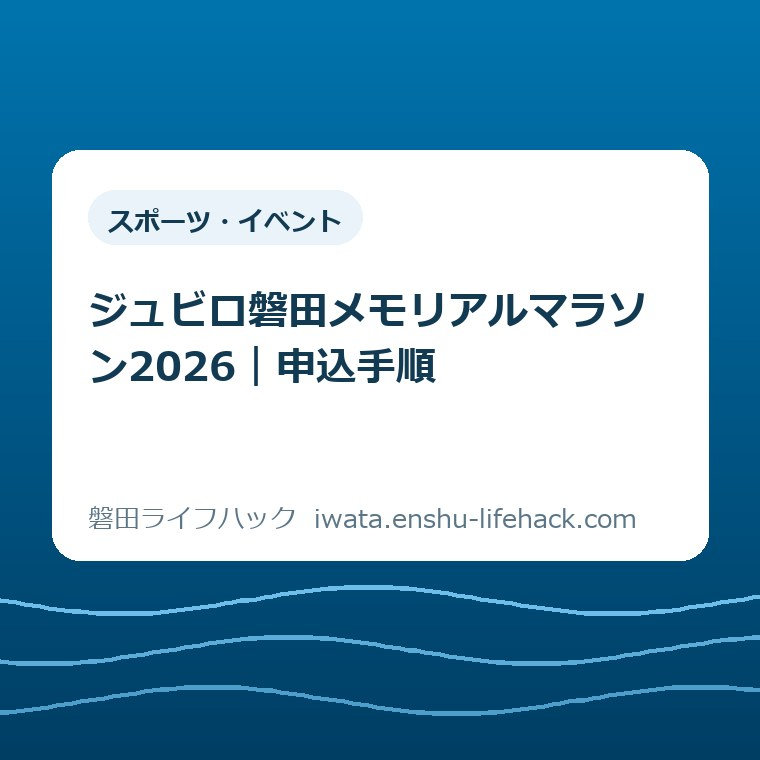

スポーツ・イベント
ジュビロ磐田メモリアルマラソン2026｜申込手順

この記事の要点
Q. 初参加です。いつまでに、何を決めて申し込めばいいですか。
A. 第29回大会は2026年11月22日開催、通常申込は9月14日23時59分までです。先に5種目から対象と制限時間に合うものを選び、RUNNETで参加料の決済まで終えてください。定員到達で早く締まるため、最新状況は公式ページで確認します。
結論——9月14日までに「種目」と「決済」を終える
第29回ジュビロ磐田メモリアルマラソンは、2026年11月22日（日曜）に開催されます。通常申込は2026年9月14日（月曜）23時59分までです。申込期間中でも定員に達した時点で募集は終わります。
会場はヤマハスタジアム周辺です。市の案内では、ヤマハスタジアムがスタートとフィニッシュの会場として示されています。開会式は午前8時20分です。
申込方法はインターネットのRUNNETだけです。電話やファクスでは申し込めません。画面へ情報を入れただけでは足りず、参加料の決済完了で出走権が確定します。
初参加で最初に決めることは、速さではありません。本人の年齢、走る距離、制限時間、参加料の四つです。ここが合えば、申込画面の迷いはかなり減ります。
走る準備より先に、申込を終える。期限を過ぎれば、参加するか迷う自由までなくなります。今日は種目を一つ決め、RUNNETの決済完了画面まで進む。私は、その段取りが一番実用的だと考えます。

公式情報で確認した開催日と申込期限
磐田市の「第29回ジュビロ磐田メモリアルマラソン」は、2026年7月1日更新です。開催日を11月22日、申込締切日を9月14日と案内しています。2026年9月5日に内容とリンクの表示を確認しました。
市のページには「申し込みはオンラインのみで受付しています」と明記されています。続けて、定員になり次第締め切るとも案内されています。最終日まで必ず枠が残るという意味ではありません。
RUNNETの大会ページでは、通常のエントリー期間が2026年7月1日0時から9月14日23時59分までと示されています。市の「9月14日」を、時刻まで確認できる形です。
募集規模は8,000件、参加者では8,600人です。件数と人数が違うのは、3kmファミリーが1組2人で申し込むためです。大会全体の数字を読むときに、ここは意外に見落としやすいところです。
磐田市は、市内外から7,000人以上が参加する市を代表するスポーツイベントと紹介しています。ヤマハスタジアムを起点に、見付、国府台、今之浦、福田方面など、普段の生活圏に近い道をランナーが進みます。
大会公式サイト上部には、日付が未入力のように見える表示もありました。しかし、磐田市の本文、大会公式の開催概要、RUNNETは11月22日（日曜）で一致しています。この記事では一致した三つの情報を基準にしています。
5種目を年齢・料金・制限時間で比べる
第29回大会の種目は、ハーフマラソン、5km、3km小学生、3kmファミリー、3kmファンランの五つです。距離だけでなく、対象年齢と計測の有無が違います。
ハーフマラソンは高校生以上が対象です。定員は4,600人、参加料は6,000円、制限時間は3時間です。男子と女子で年齢別の部門があります。
5kmは中学生以上が対象です。定員は1,600人、制限時間は40分です。参加料は中学生2,500円、高校生以上4,500円です。
3km小学生は、小学1年生から6年生までが対象です。男女別で、定員は700人、参加料は2,000円、制限時間は30分です。4～6年生と1～3年生ではスタート時刻が分かれます。
3kmファミリーは、小学生1人と18歳以上の保護者1人の組です。定員は600組、合計1,200人です。参加料は1組6,000円で、申込は出走する保護者の名義で行います。
3kmファンランは小学生以上が対象です。定員500人、参加料3,500円、制限時間30分で、記録計測はありません。順位より、3kmを楽しんで走り切りたい人の選択肢です。
大人が個人で3kmの記録を残す部門はありません。大人が3kmを走るなら、親子のファミリーか、非計測のファンランを検討します。記録を残したい大人は5kmかハーフです。
仮装で参加できるのは3kmと5kmです。ハーフマラソンは対象外です。服装を先に考えている人も、種目の条件を逆算して選ぶ必要があります。

RUNNETで申し込む7段階
ジュビロ磐田メモリアルマラソン2026の申込は、種目確認から決済完了まで七段階に分けると抜けを防げます。家族分を扱うときは、誰の名義で申し込むかを最初に決めます。
- 磐田市または大会公式ページから、第29回大会のRUNNETページを開く。
- 本人の年齢と希望距離を、参加資格・制限時間と照らして種目を決める。
- RUNNETへログインし、申込者情報と参加者情報を入力する。
- 3kmを除く種目では、無理のない予想タイムを入力する。
- 参加賞、駐車券の希望、緊急時に必要な項目を確認する。
- 種目、氏名、料金、入力内容を見直して参加料を支払う。
- 決済完了と申込履歴を確認し、受付番号や画面を保存する。
RUNNETの会員登録がまだなら、メールアドレスとログイン情報を用意します。家族や友人の分をまとめて扱う機能もありますが、出走者の氏名、年齢、連絡先を取り違えないよう、一人ずつ確認します。
ファミリー部門は、子どもの名前だけで申し込むのではありません。出走する保護者名義で申し込みます。小学生1人と保護者1人の組で、二人が手をつないでフィニッシュする種目です。
ハーフと5kmでは、予想タイムがスタート時のグループ分けに使われます。実力から大きく離れたタイムは、周囲との接触につながります。未入力なら最終グループからの出走です。
コンビニ払いを選ぶ場合は、申込期限とは別に支払期限を確認します。入力を9月14日までに終えても、指定された支払期限を過ぎれば決済完了にはなりません。
決済前に、部門と参加者をもう一度見ます。参加料決済後の部門変更や返金はできません。誰がどの距離を走るか、家族の会話と画面の選択が一致しているかが最後の確認です。
申込画面で決める交通手段と参加賞
申込時には、走る種目だけでなく当日の車利用も決めます。ランナー用駐車場を希望する人は、RUNNETで駐車場利用を申し込みます。希望者には無料の駐車券が事前郵送されます。
駐車券には指定駐車場が記載されます。大会当日は渋滞が起きやすいと公式FAQが案内しています。普段ヤマハスタジアムへ車で行く感覚のまま、好きな駐車場へ停める仕組みではありません。
公共交通なら、JR御厨駅から会場まで約1.5km、徒歩約20分です。3kmと5kmのコースに交差するため、御厨駅から会場へ向かう途中で一時的に横断できない時間があります。
車と鉄道のどちらにするか迷う場合は、磐田市で公共交通を使うときの確認先と、駐車場・アクセスの調べ方を見比べてください。大会の交通案内と規制情報を優先します。
参加賞は申込画面で選びます。RUNNETはTシャツ、ビッグタオル、地場産品詰め合わせ、磐田銘菓詰め合わせ、チャリティー、本人の大会写真を案内しています。ファミリーは二人分を自由に選べない組み合わせがあります。
交通規制の詳細は、大会のおよそ1か月前に大会公式サイトで案内される予定です。2026年9月5日時点では、後から出る案内を確認する余地が残っています。申込時の情報だけで当日の移動を確定しない方が安全です。
申込後に届くものと当日の持ち物
第29回大会は当日の選手受付がありません。開催日の約2週間前を目安に、アスリートビブス、計測チップ、参加者案内、参加賞引換券などが郵送されます。
「当日に会場で受付すればよい」と思っていると、準備の順番が逆になります。郵便物が届いたら、氏名、種目、ビブス、計測チップ、駐車券の有無を一度に照合します。
アスリートビブスの裏面には緊急連絡先を記入します。体調確認を行い、保険証はコピーでもよいので持参するよう募集要項に記載されています。
練習場所をこれから決める人は、磐田市のスポーツ施設を初めて選ぶ手順で、目的、予約、料金、距離の順に候補を絞れます。大会へ申し込むことと、無理のない練習計画は分けて考えます。
施設の手続きだけを先に確認したい人は、磐田市のスポーツ施設ガイドも使えます。大会までの体調や走力は個人差が大きいため、無理な距離を一律には勧めません。
評価——良い点を先に数える
第29回大会の良い点は、初参加者が距離を選びやすいことです。小学生の3km、親子のファミリー、非計測のファンラン、5km、ハーフまで入口が分かれています。
制限時間も数字で示されています。ハーフ3時間、5km40分、3km30分です。速い人だけの大会に見せず、自分の走力に合わせて判断する材料があります。
申込から当日までの役割分担も明確です。RUNNETで決済し、ビブスなどは事前郵送されます。当日受付がないため、会場で並ぶ手間を減らせます。
駐車券の希望を申込時に取る点も、台数と人の流れを事前に整理する仕組みです。市内外から8,600人規模が動く大会では、自由駐車より現実的です。
注文したい点——公式三か所を往復させないでほしい
注文したい点は、申込期限、種目表、申込操作、当日の交通が、磐田市、大会公式、RUNNETに分かれていることです。初参加者は、どのページを最終回答にするか迷います。
磐田市のページは開催日と締切が見やすく、パンフレットには料金表があります。大会公式FAQは変更・返金や駐車券に詳しく、決済はRUNNETです。役割はありますが、申込途中の人には三つの地図を同時に開く状態です。
私は、磐田市の案内に「種目を選ぶ」「RUNNETで入力する」「決済完了を確認する」「郵送物を待つ」という短い進行表があると助かると考えます。担当する人への批判ではなく、入口の並べ方への注文です。
大会公式サイト上部の未入力に見える開催日表示も、初参加者を迷わせます。本文では正しい日付を確認できました。目立つ場所と本文の表示が早くそろうことを、一市民として望みます。
対案・結論——今日やるのは四項目のメモ
ジュビロ磐田メモリアルマラソン2026へ申し込む人が今日できる一歩は、紙かスマートフォンに「出走者、種目、参加料、交通手段」の四項目を書くことです。そのままRUNNETの入力順になります。
たとえば「本人、5km、4,500円、御厨駅から徒歩」と一行にします。家族なら「保護者名義、3kmファミリー、1組6,000円、駐車券希望」と書けば、名義と駐車券の見落としを減らせます。
次に、RUNNETで決済を終え、申込履歴を保存します。コンビニ払いなら支払期限も同じメモへ足します。申込完了メールだけに頼らず、家族が見つけられる場所へ控えを置きます。
11月に入ったら、郵送物と交通規制の案内を確認します。届かない、種目が違う、駐車券がないといった場合は、平日9時から17時に実行委員会へ確認できます。
大石の視点——申込は走力ではなく段取りで詰まる
ここからは公表情報ではなく、大石浩之（磐田市／不動産業）の意見です。今回のテーマに使える実体験は体験台帳にないため、私が参加した、申込画面を操作したという話は書きません。
私自身、開催日の根拠を磐田市、大会公式、RUNNETのどこに置くか迷いました。三つの本文が11月22日で一致する一方、大会公式の上部には未入力に見える日付表示が残っていたからです。だから、見出しの大きさではなく一致する一次情報を選びました。
私は、初参加の申込で詰まりやすいのは走力より段取りだと考えます。親子の名義、年齢区分、予想タイム、駐車券、支払期限は、走る練習とは別の仕事です。
市民は、申込画面へ進む前から、仕事や家事の合間に家族の予定を合わせています。その手間を「簡単なオンライン申込」の一言で片づけてはいけません。
だから、今日の成果はトレーニング計画を完成させることではありません。種目と交通手段を家族で決め、決済を終えることです。申込後に、体調と生活に合う練習量を考えれば間に合います。
FAQ——初参加者から出やすい3問
ジュビロ磐田メモリアルマラソン2026の初参加者が確認したい内容を、申込期限、種目選び、当日受付の三つに絞ります。回答は2026年9月5日に確認した公式情報に基づきます。
Q1. 申込期限はいつですか。
通常申込は2026年9月14日23時59分までです。ただし、申込期間内でも定員に達した時点で締め切られます。RUNNETで入力しただけでは確定せず、参加料の決済完了で出走権が確定します。最新状況は磐田市と大会の公式ページで確認してください。
Q2. 初参加ならどの種目を選べばよいですか。
記録を競わず3kmを楽しむなら小学生以上のファンラン、親子なら小学生1人と18歳以上の保護者1人のファミリーが候補です。5kmは中学生以上、ハーフは高校生以上です。年齢、制限時間、料金を照合して決めてください。
Q3. 申込後、大会当日に受付はありますか。
大会当日の選手受付はありません。開催日の約2週間前を目安に、アスリートビブス、計測チップ、参加者案内、参加賞引換券などが郵送されます。届いた内容と緊急連絡先の記入を確認し、当日に忘れず持参してください。
申込前の最終確認
第29回大会は2026年11月22日開催、通常申込は9月14日23時59分までです。期限、定員、本人の対象種目を公式ページで確認し、RUNNETの決済完了まで進めます。
- 五つの種目から年齢、距離、制限時間、料金が合うものを一つ選ぶ
- ファミリーの保護者名義、予想タイム、駐車券希望を入力前に決める
- 決済完了後は郵送物と大会約1か月前の交通規制案内を確認する
参考にした公式情報
- 第29回ジュビロ磐田メモリアルマラソン／磐田市（2026年9月5日確認・ページ更新日2026年7月1日）
- 第29回大会パンフレット／磐田市（2026年9月5日確認）
- ランナー案内／ジュビロ磐田メモリアルマラソン実行委員会（2026年9月5日確認）
- よくある質問・お問い合わせ／ジュビロ磐田メモリアルマラソン実行委員会（2026年9月5日確認）
- 第29回ジュビロ磐田メモリアルマラソン／RUNNET（2026年9月5日確認）

最終確認日：2026-09-05 ／ 本記事は公表情報と執筆者の見解を分けて記載しています。参加条件・数値・公開状況は変更される場合があります。個別の参加可否は大会実行委員会へ問い合わせ、最新情報は必ず磐田市と大会の公式ページでご確認ください。